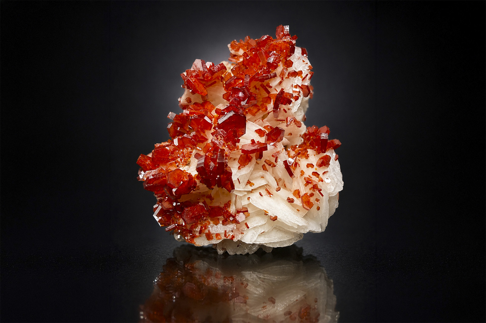

Vanadinite on White Barite
"Bright Red Vanadinite on White Barite"
VII-10753
ACF Mine, Mibladen, Aït Oufella Caïdat, Midelt Cercle, Midelt Province, Drâa-Tafilalet Region, Morocco
ex M.C. Jensen collection
Purchased 7/11/2026 from MinCollect for $450.00
Core Collection • In Collection
Details
Storage Type: Shelf
Storage Location: C06 S2
Size class: TBD (0)
Dimensions: Unrecorded
Mass: Unrecorded
Luster: Outstanding, Vitreous